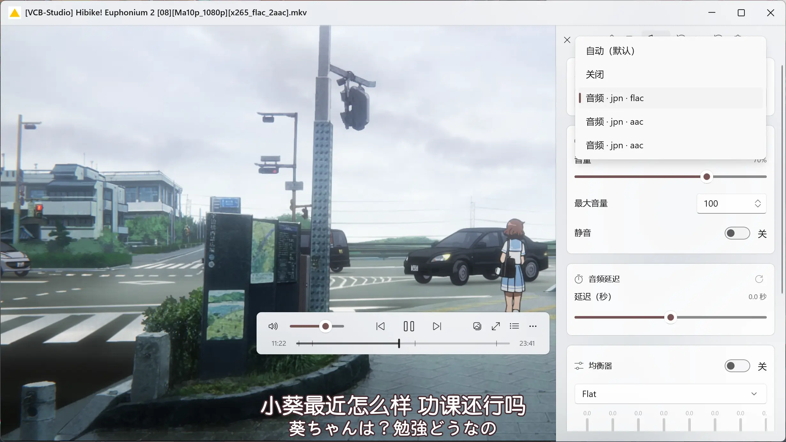
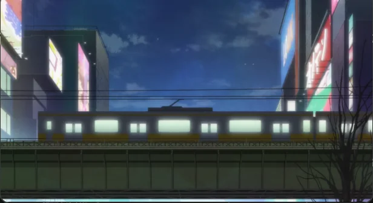

IINA 只在 macOS
它的交互是很多人的白月光，但 Windows 用户只能看截图。Wiina 把同一套界面逻辑按 Fluent 规范重写。
Why another player?
不是缺解码能力，而是缺一层为桌面、为字幕、为小窗、为高 DPI 认真做过的界面。
它的交互是很多人的白月光，但 Windows 用户只能看截图。Wiina 把同一套界面逻辑按 Fluent 规范重写。
默认只有黑框和快捷键。想调字幕、看统计、拖小窗，要写一整套配置和脚本。
高 DPI 发虚、界面堆广告、画中画割裂。Windows 11 的 Mica、圆角、深浅主题基本没用上。
ASS 特效、字体、双字幕、同集多版本、进度缩略图——每一样都能凑合，但很少一起顺手。
What you get
OSC 可以悬浮，也可以停靠；自动隐藏会忽略 5 px 内的手抖，鼠标真正离开或失焦才收起。侧栏把布局、视频、音频、字幕、播放列表、章节、插件分页装进一个快速面板。

原生统计面板分组显示文件、视频、音频、播放与渲染：编码、位深、色彩矩阵、硬解路径、丢帧与音画同步。丢帧提醒是一张居中的 WinUI 卡片，不再是一行被标题栏挡住的文字。

画中画无边框、置顶、可缩放；小窗里的快捷键直接复用主窗口的键位表，不用再记一套。贴边吸附按可见边缘计算，吸附后不抖，反向拖一下就能拿下来。

缩放、色度、抖动、去色带、插帧、同步，内置「默认 / 性能优先」两档，也能导入导出自己的组合。
同集所有外挂字幕入列，assfonts 版本优先；支持双字幕、字体/描边/位置、自动加载与记忆。
每个选项都有说明与即时生效；深浅主题、强调色、减少动态与系统设置联动。
视频与音频格式一键关联，支持 Windows 默认应用注册与管理员级注册，卸载时清理干净。
Screenshots

Docs
每个版本都有验收记录；架构决策、UI 规格与性能数据都能追溯到文件。
Download
Windows 10 2004+ / Windows 11 · x64 · 自带 .NET 与 Windows App Runtime，解压即用。
没有代码签名：首次运行可能看到 SmartScreen「Windows 已保护你的电脑」， 点「更多信息 → 仍要运行」即可。发布包的 SHA-256 记录在 验收页， 可下载后自行核对。